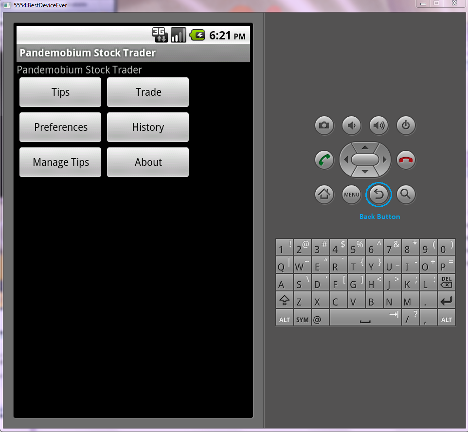

| Table of Contents: |
|---|
| What Is It? |
| Main Menu |
| Preferences |
| Trades Page |
| Tip Manager |
| Tips Page |
| History |
Pandemobium Stock Trader is a mobile application which allows registered users to retrieve quotes for, and purchase, capital stocks from their mobile devices. The application also enables users to create, share, and view tips, which are used to advise other users on the right price to purchase specific stocks at, and why. Users of Pandemobium Stock Trader are also provided with a History utility, useful for viewing all previously purchased stocks and previously shared tips.
Launching the PandemobiumStockTrader app will bring the user to the Main Menu of Pandemobium Stock Trader. This screen provides the user with the ability to navigate to any other page of the application. Each button in this menu corresponds to one of the pages listed in the sections below.
The user can navigate back to the Main Menu from any page in the application by pressing the emulated Android device's Back Button, (highlighted in the picture below). Pressing this button takes the user back to the previously visited page. Please note the button may need to be pressed multiple times in order for the user to navigate back to the desired page.
The Preferences page can be used to retrieve account information and give access to the tip sharing feature of the application. Users who have not logged into their account retain the ability to view and purchase stocks, create tips that can later be shared, and view their transaction history. This page is accessable by clicking the "Preferences" button on the Main Menu.
In order for the user to log into the application, they must provide valid values for the User Name and Password fields, and then click the "Retrieve Preferences" button. A message will appear below the button indicating whether or not the login attempt was successful.
The Trades Page can be used for retrieving quotes for various stocks. The user can also use the page to purchase a specified amount of a particular stock.
In order to retrieve the current value of a stock, the user must provide a valid symbol for the "Symbol" field and click the "Get Quote" button. If the symbol was valid, a message will appear under the "Get Quote" button indicating the price of the stock.
If the user would like to purchase a particular stock, they must provide a valid symbol for the "Symbol" field and a value indicating the number of stocks they would like to order in the "Shares" field, and then click the "Buy" button. A message indicating the status of the order will be displayed under the "Buy" button after it has been clicked.
The user can use the Tip Manager page to create and save new tips, which can later by shared with other Pandemobium Stock Trader users through use of the Tips Page. To view this page, the used must click on the "Tip Manager" button on the Main Menu.
The user must provide values for all three fields in order for the tip to save successfully. Upon saving, a message will appear on the bottom of the page content indicating the status of the save.
The Tips Page can be used to view tips posted by other users of the service. Each tip provides the current user with shortcut links to purchase various amounts of the recommended stock. This page can be reached by clicking the "Tips" button on the Main Menu.
This page also provides users with the ability to send their saved tips to the web service, which will make them viewable to all other users of the application.
In order to send tips, the user must either click on the "Share your tips for..." link, or alternatively type the symbol of the saved tips they want to share into the input field and click the "Submit" button. At this point the user will be redirected to a blank page with a "Send Tips" link, which must be clicked in order for the specified tips to be sent to the web service. Upon sending tips the user is brought to the Tip Manager page, where a message will appear on the bottom of the page indicating the status of the sent tips.
The History Page provides the user with a visual representation of all past transactions. All previously purchased stocks and shared tips are displayed on this page.
The "Trade History:" section shows information about stocks that have been purchased by the user. This information includes the quantity of stocks in the purchase, the price of said stocks, and the date on which they were ordered.
The "Tip History:" section displays all of the tips previously shared by the user.